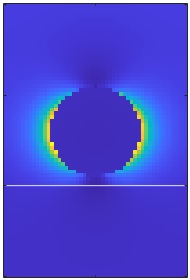

stratified.solution
The solution of the stratified.bemsolver is a stratified.solution object. This object can be used to compute and plot the fields on and off the boundary, as well as for further processing in the various simulation classes.
Contents
Initialization
% initialize solution object for stratified media % tau - vector of boundary elements % k0 - wavelength of light in vacuum % e - electric field coefficients % h - magnetic field coefficients % layer - layerstucture for stratified medium sol = solution( tau, k0, e, h ); sol.layer = layer;
Methods
% electromagnetic far fields, PropertyPairs control boundary element integration % dir - propagation direcctions of farfields [ e, h ] = farfields( sol, dir, PropertyPairs ); % electromagnetic fields at points PT1 % 'green' - reflected Green function object % 'refl' - compute reflected fields only % 'relcutoff' - cutoff for refined integration % 'waitbar' - show waitbar during evaluation [ e, h ] = fields( sol, pt1, PropertyPairs ); % evaluate tangential fields at centroid positions [ e, h ] = interp( sol ); % evaluate fields at boundary inside or outside [ e, h ] = interp( sol, 'inout', inout ); % surface charge distribution sig = surfc( sol );
In the field computation we use the tabulated Green functions. The toolbox uses the classes defined in stratified.pot2 which are similar to those of stratified.pot1. Interested users are adviced to directly access the Matlab code where more information about the functionality can be found. Note that the field computation is often relatively slow, with runtimes on the order of minutes rather than seconds.
Examples
We consider the example of a gold nanosphere situated 5 nm above a glass-air substrate, as previosuly discussed in stratified.bemsolver.
% materials for glass substrate, air, and gold mat1 = Material( 2.25, 1 ); mat2 = Material( 1, 1 ); mat3 = Material( epstable( 'gold.dat' ), 1 ); % layerstructure layer = stratified.layerstructure( [ mat1, mat2 ], 0 ); % nanosphere situated 5 nm above substrate p = trisphere( 144, 50 ); p.verts( :, 3 ) = p.verts( :, 3 ) - min( p.verts( :, 3 ) ) + 5; % boundary elements with linear shape functions tau = BoundaryEdge( [ mat1, mat2, mat3 ], p, [ 3, 2 ] ); % set up BEM solver and planewave excitation bem = stratified.bemsolver( tau, layer, 'waitbar', 1 ); exc = stratified.planewave( layer, [ 1, 0, 0 ], [ 0, 0, -1 ] ); % solve BEM equations k0 = 2 * pi / 600; sol = bem \ exc( tau, k0 );
In order to compute the electric field map, we define a rectangular grid for the field positions, place the positions in the dielectric environment using the function stratified.Point, and compute the electromagnetic fields.
% positions where field is computed x = linspace( - 50, 50, 51 ); z = linspace( - 50, 100, 71 ); [ xx, zz ] = ndgrid( x, z ); pos = [ xx( : ), 0 * xx( : ), zz( : ) ]; pt = stratified.Point( layer, tau, pos ); % comoute electromagnetic fields [ e1, h1 ] = fields( sol, pt ); [ e2, h2 ] = fields( exc, pt, k0 ); % plot electric field intensity ee = reshape( dot( e1 + e2, e1 + e2, 2 ), size( xx ) ); imagesc( x, z, ee .' ); hold on

- demostratfield01.m - Electric field for optically excited nanosphere.
- demostratfield02.m - Electric field for optically excited nanodisk.
- demostratfar01.m - Electric farfields for optically excited nanosphere.
- demostratfar02.m - Scattering spectra for detector with finite NA.
Copyright 2023 Ulrich Hohenester